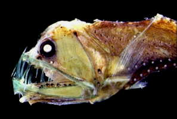
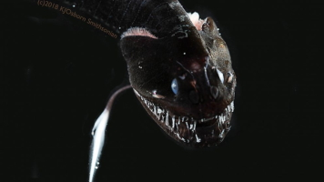

Sweet Release is the latest and safest in ghost transforming technology. With Sweet Release, you can transform yourself into a ghost risk free and be granted your sweet release from the mortal coil! We even offer a 30 day money back guarantee. If you aren't satisfied with the end of your mortal existance and bound to the earth and unable to enter the afterlife, we have the best supernatural technology in the world. As a safety precaution, we take a sample of your DNA before using Sweet Release. This sample is used to make a clone of yourself that we then safely transfer your soul back into using our professionals trained in the use of the Necronomicon. Note that the clone that you are returned to will be the same age as when you used Sweet Release. Please read our instructions and warnings page for proper use of Sweet Release. For those who want to return to their youth, look at our page for our Eternal Youth service for more information.
One great benefit is that you don't have to worry about the afterlife. None of us know which religion is the correct one. We also don't know what the afterlife is. It could be Heaven, Hell, Samsara, or an empty void. With Sweet Release, you don't have to worry if your religion is the correct one. Besides, the correct afterlife can be a large gamble with so many possibilities.
Pastafarian heavan is a great afterlife with their beer volcanoes and stripper factories. But that is only true for those who explicitly believe in it. Their version of hell has stale beverages and all the strippers have STDs.
There might not even be an afterlife. Even worse, you could still maintain full awareness and feel all the pain of not being able to breathe and feeling all the pain of decomposition and still feeling constantly worsening pain after full decomposition as decribed by individual O5-2 in the SCP article for SCP-2718.While the SCP wiki and the are fictional, this version of death could still be real for all we know. Which is why all our employees enjoy free healthcare and our Eternal Youth services for free.
If you are a woman. The afterlife may not be pleasant for you. Some forms of Islam state that women will be reborn as houris where they are reborn as virgins made only for the purpose of serving a single man for all of eternity
For all those who are a prankster at heart, nobody can do pranking better than a ghost. With Sweet Release, you can turn into a ghost that can turn tangible and intangible at will. Other companies only turn you into a purely ethereal being that can't interact with the physical world and that's no fun at all. Your ability to interact with the physical world allows for great pranks, like making peoples socks and pens dissapear, haunting the house of your annoying boss or your ex.
If you are an environmentalist, there is no greater way to reduce your burden on the environment than turning into a ghost. You no longer have to increase pollution by driving your car or breathing. Ghosts can just float around and ghosts don't need to breathe anyway. You also help reduce the burden of overpopulation.
Sweet release is also great for those with an adventurous spirit. You can go almost anywhere as ghost. If you previously didn't want to visit places like Mt. Everest because it's too cold or Australia because everything there can kill you. You can even go places no man has gone before like the bottom of the ocean. There isn't any currently available technology that can withstand the immense pressure of the deep. You also don't need to worry about any of those frightening looking fish at the bottom or the possible existance of the Kraken. Deep sea aquatic life is scary, with things like the tongue-eating louse. Just look at these images of other deep sea life.
 You can even go into space. Most of us are too poor to visit space and space is scary, almost everything in space can kill you like the lack of oxygen, solar radiation, lethal gravity on other planets, lethal atmospheres, space debris, asteroids, lethal temperatures, and more. With Sweet Release, you don't have to worry about any of that because almost nothing can kill a ghost. Even if you can travel to space right now, you are still exposed to 10 times the radiation of someone on Earth even if you stay in the Earth's gravity field. You will also lose bone mass that may not be fixed by rehabilitation. Both of these are described by NASA on their website.
For those who are too stressed in life and just want to end it all. Sweet Release is the right choice for you. Burdened with debt? Suffering from a painful terminal illness and don't want to put the financial burden of the American health care system on your loved ones? Don't worry! Ghosts don't have a need for money and they don't need to pay taxes.
Sweet Release is also great for those worried about their short mortal life-spans. We also offer the Eternal Youth service. Since we use clones and don't use your corpse to bring you back to life, we can create a clone from back when you were young and put your soul back in it. Note that additional charges will apply to use our Eternal Youth services. We'll even get rid of any genetic physical disabilities free of charge!